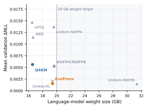

Packing one fixed-size backpack for a long hike: pick one sturdy pack over many pouches, copy an expert's packing list, then vacuum-seal the clothes but leave the first-aid kit as it is. Done carefully, the trip goes the same as with the big suitcase.
긴 산행을 위해 크기가 정해진 배낭 하나를 싼다고 해 보자. 작은 주머니 여러 개보다 튼튼한 배낭 하나를 고르고, 전문가의 짐 목록을 따라 하고, 옷은 진공 압축하되 구급상자는 그대로 둔다. 꼼꼼히만 하면 큰 여행 가방을 들고 갈 때와 산행이 다르지 않다.
How it works: three compressions under one memory budget작동 방식은 메모리 예산 하나에 압축 세 가지
Every design choice is scored against a 32 GB box that must also hold the KV cache, a draft model, and the vision encoder. That leaves under 20 GB for the language-model weights.
모든 설계 선택은 KV 캐시, 초안 모델, 비전 인코더까지 담아야 하는 32 GB 상자를 기준으로 평가된다. 그래서 언어 모델 가중치에 남는 자리는 20 GB 미만이다.

- Choose dense over MoE.MoE 대신 밀집 구조.Ladders compared at equal inference memory favored dense by 2–2.5× in compute efficiency.추론 메모리를 같게 맞춘 사다리 비교에서 밀집 구조가 계산 효율로 2~2.5배 앞섰다.
- Distill from Muse Spark.Muse Spark에서 증류.Pre-training matches the teacher's top-256 logits with KL for 95% of steps, then switches to plain cross-entropy; context then grows to 128K with agent data.사전학습의 95% 동안 교사의 상위 256개 로짓을 KL로 따라가고 이후 평범한 교차 엔트로피로 바꾼다. 그 뒤 에이전트 데이터로 문맥을 128K까지 늘린다.
- Shrink cache and weights.캐시와 가중치 줄이기.Two KV heads and a 2,048-token window in three of every four layers bound the cache; weights go from 55.7 GB to 19.65 GB (EvoPress) or Q4KM for 24 GB cards.KV 헤드 2개와 네 층 중 세 층의 2,048토큰 윈도가 캐시를 묶는다. 가중치는 55.7 GB에서 19.65 GB(EvoPress)로 줄고, 24 GB 카드용은 Q4KM이다.
Key point: careful 4-bit does not stretch the reasoning핵심은 조심스러운 4비트가 추론을 늘리지 않는다는 것
Aggressive low-bit models are known to think longer; with sensitive tensors kept at higher precision, response length stays within about 3% of BF16. Accuracy drops by 0.1 to 1.3 points.
공격적인 저비트 모델은 생각을 더 길게 한다고 알려져 있다. 민감한 텐서를 더 높은 정밀도로 남기면 응답 길이는 BF16과 약 3% 안에서 머문다. 정확도는 0.1~1.3점 떨어진다.
Results: ahead of its size class on tools, mixed on coding결과는 도구 사용에서 앞서고 코딩은 엇갈림
It beats Gemma4-31B on every agent and tool row of the scorecard, by 21 points on MCPAtlas. Qwen3.6-27B still wins OSWorld, TerminalBench, SWE-Bench Verified, and GDPval-AA.
성적표의 모든 에이전트와 도구 항목에서 Gemma4-31B를 이기고, MCPAtlas에서는 21점 앞선다. OSWorld, TerminalBench, SWE-Bench Verified, GDPval-AA에서는 여전히 Qwen3.6-27B가 이긴다.
| Benchmark | Glimmer | Gemma4-31B | Qwen3.6-27B |
|---|---|---|---|
| MCPAtlas | 75.5 | 54.2 | 62.5 |
| τ³-Banking | 23.5 | 15.1 | 16.7 |
| SWE-Bench Pro | 51.2 | 36.9 | 50.2 |
| SWE-Bench Verified | 76.0 | 66.6 | 77.2 |
| OSWorld-Verified | 65.9 | 58.5 | 75.6 |
| TerminalBench 2.1 | 51.7 | 43.4 | 60.7 |
When the target is a fixed memory box, compare architectures at equal inference memory rather than equal parameters, and budget the KV cache before the weights. For reasoning-heavy agents, keep quantization conservative on sensitive tensors; here that avoided the longer chains of thought seen with aggressive low-bit models.목표가 정해진 메모리 상자라면 파라미터 수가 아니라 같은 추론 메모리에서 구조를 비교하고, 가중치보다 KV 캐시 예산을 먼저 잡자. 추론을 많이 하는 에이전트라면 민감한 텐서의 양자화는 보수적으로 두자. 여기서는 그 덕분에 공격적인 저비트 모델에서 보이던 사고 사슬 길어짐을 피했다.
This is a model report, not a controlled study. The quantization effect appears only as a 15-task average with no per-task or long-horizon breakdown, the scorecard does not say which precision it used, and no on-device speed is reported.통제된 연구가 아니라 모델 보고서다. 양자화 효과는 15개 과제 평균으로만 나오고 과제별이나 긴 과제별 분석이 없으며, 성적표가 어떤 정밀도로 측정됐는지 밝히지 않고, 기기에서의 속도도 보고하지 않는다.